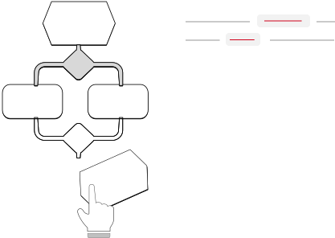

<section id="documentation">
  <div class="offering">
      <h3>central Source of truth</h3>
      <h2>Organize your enterprise into one, central repository of all your process documentation.</h2>
      <ul>
          <li>
            
            <div>Review and documentation of existing standards</div>
          </li>
          <li>
            
            <div>Organization-wide standardization and integration strategy</div>
          </li>
          <li>
              
              <div>KPI measurement and implementation plan</div>
            </li>
        </ul>
  </div>
  
  

</section>